The 30-second version
No account needed. Open the app and:
- 1Go to dictationdaily.com and press Start now.
- 2Click any video in the library.
- 3Press Start or Enter. The first clip plays.
- 4Type what you heard and press Enter.
- 5Fix the highlighted word and press Enter again until you see You are correct!
- 6Enter goes to the next clip, Tab replays it, Esc skips it.
Sign in with Google if you want Dictation Daily to remember where you stopped, and to count your learning time and daily streak.
Part 1
Getting started
A browser
A recent Chrome, Edge, Firefox or Safari. Phones and tablets work too, but a keyboard is much faster for typing answers and using shortcuts.
Sound
Headphones are best. Videos play from YouTube, so YouTube must work on your network.
Optional: Google account
Only needed if you want your progress saved. See Your account.
The home page
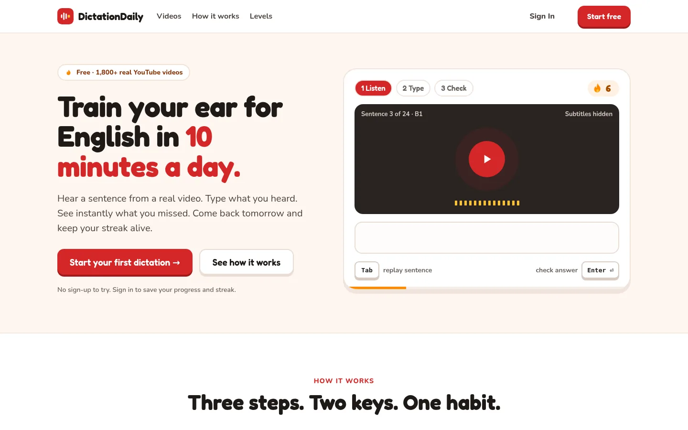
| Part of the page | What it does |
|---|---|
| Start now | Opens the video library. |
| Sign in | Signs you in with Google. |
| DD Dictation Daily logo | Returns to the home page (or the library, once you're signed in). |
| Level tabs | Describe each CEFR level and show example videos. Explore … opens the library filtered to that level. |
Choose your level
Scroll down to A Learning Experience Personalized. Each tab explains what a level means and suggests four videos. Not sure where you are? Start at Intermediate and move up when the clips feel easy.
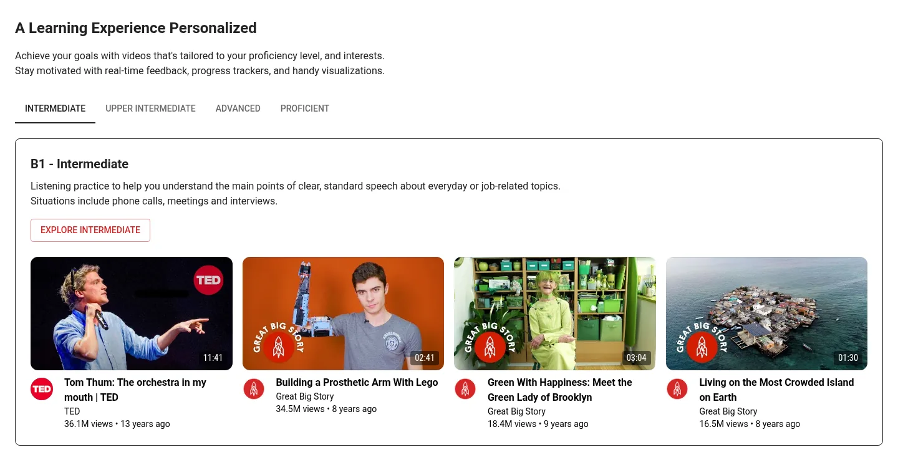
With or without an account
You can browse and practise every lesson without signing in. Signing in only changes what gets remembered:
| Signed out | Signed in | |
|---|---|---|
| Practise any lesson | ✅ | ✅ |
| Lesson reopens where you stopped | ❌ starts from clip 1 | ✅ |
| Red progress bar on thumbnails | ❌ | ✅ |
| Learning time, active days, streaks | ❌ | ✅ |
| My Learning page and menu | Empty | ✅ |
| 🔥 Streak badge in the top bar | ❌ | ✅ |
Part 2
Finding a video
The library is at dictationdaily.com/videos. Open it with Start now, or by clicking the logo on any page.
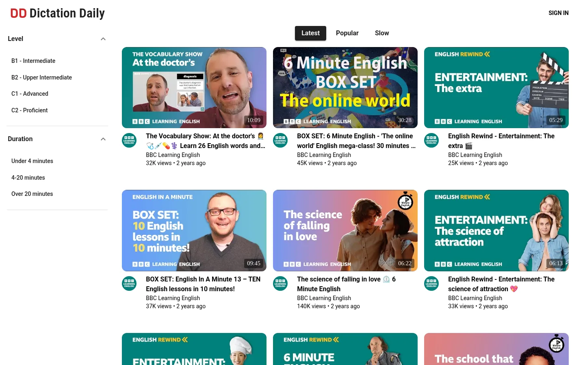
Reading a video card
- The thumbnail, with the video's length in the corner.
- A red bar under the thumbnail when you're signed in and have started the video. Its length shows how far you've got.
- The title, the channel, the YouTube view count and how long ago it was published.
Click anywhere on a card to open the lesson.
Sorting
The three buttons above the grid change the order:
Filtering by level
Click a level in the left panel to show only videos at that CEFR level. Click it again to turn it off.
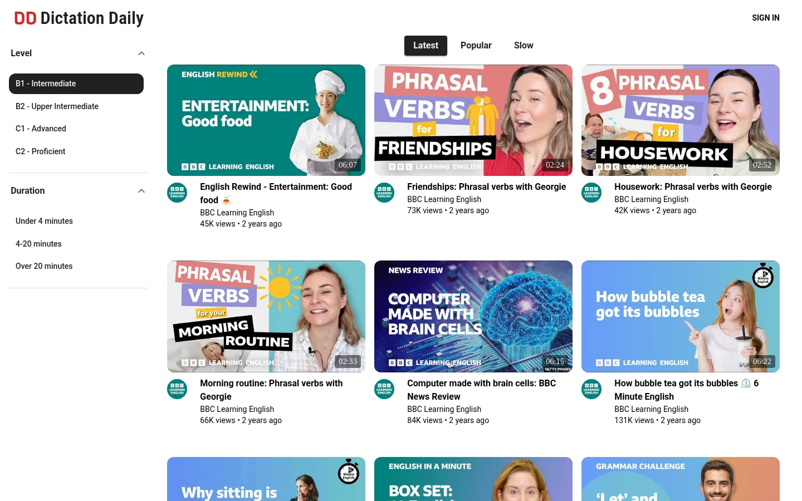
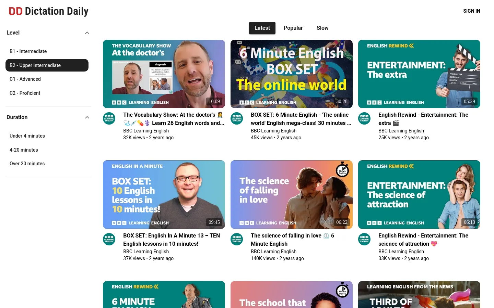
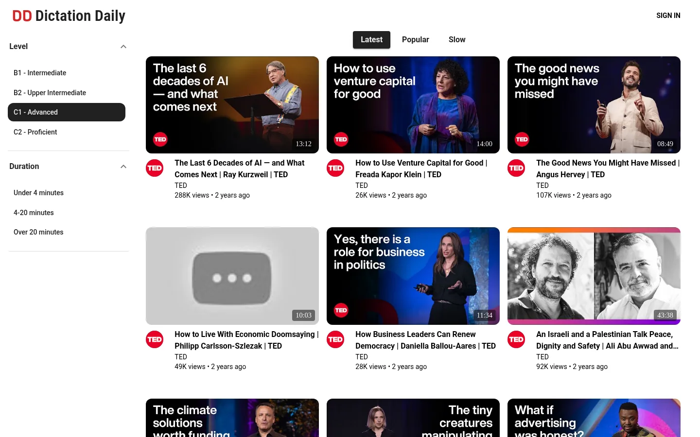
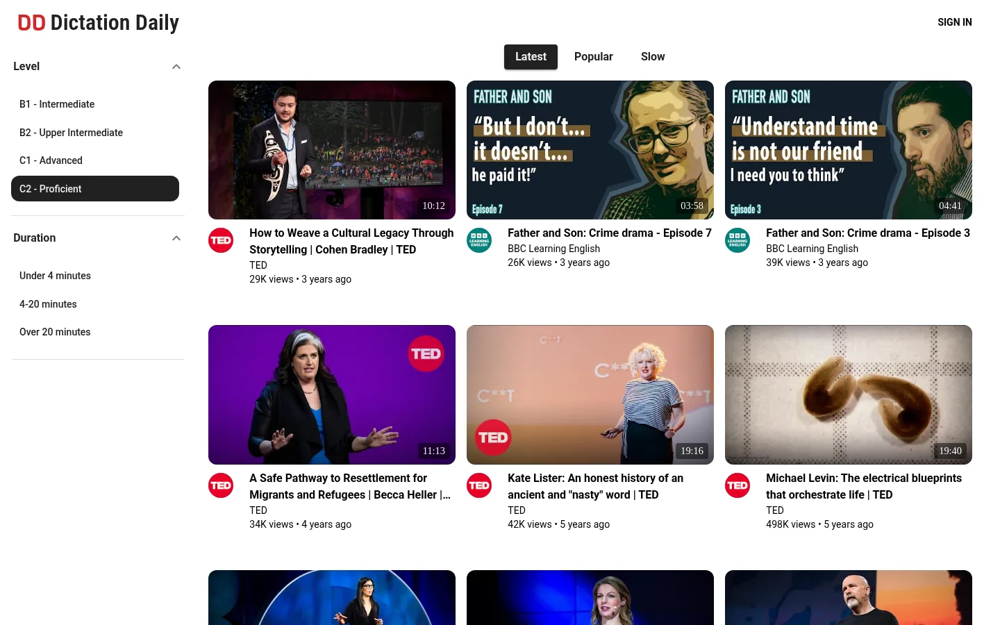
Filtering by length, and combining filters
Duration has three options: Under 4 minutes, 4–20 minutes and Over 20 minutes (the full YouTube video length). You can combine one sort, one level and one duration. Click the Level or Duration heading to collapse that group.
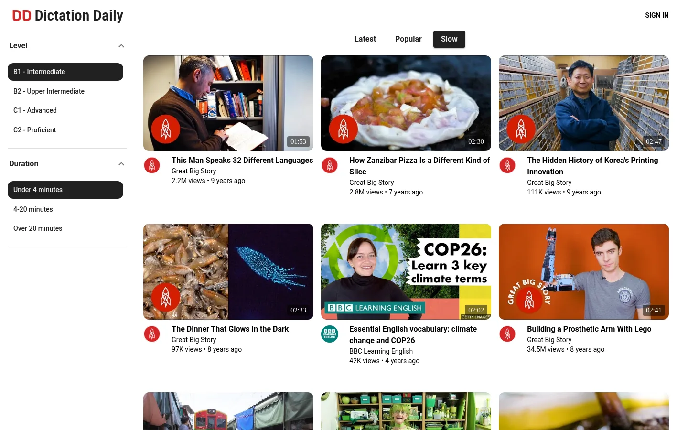
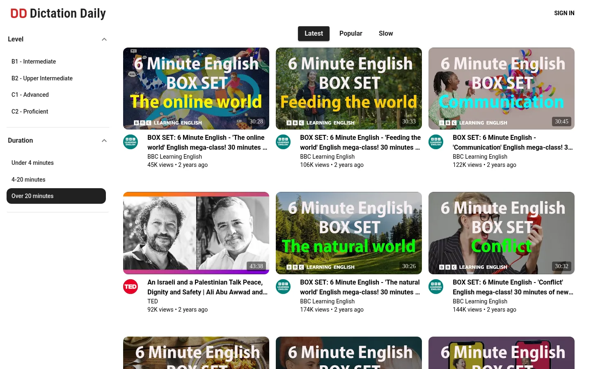
Loading more videos
The library shows 24 videos at a time. Scroll to the bottom and press Load more for the next 24. The button disappears when there are no more videos for your filters.
If the list can't load, you'll see “Couldn't load videos. Please try again.” with a Retry button.
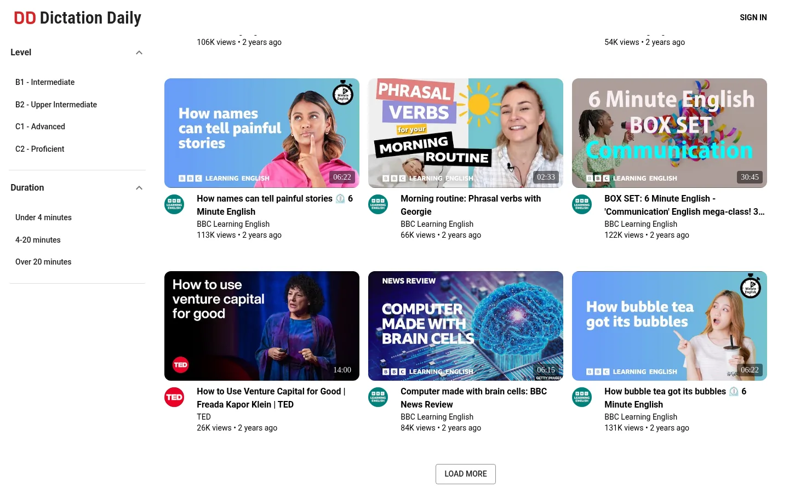
Bookmarking or sharing a list
Your sort and filters are kept in the address bar, so you can bookmark a list or send it to a friend. The browser's back button steps through your filter changes.
| Address | Shows |
|---|---|
| /videos?sort=Popular | Most viewed first |
| /videos?level=B1 | Intermediate videos |
| /videos?sort=Slow&duration=under-4-minutes | Short videos with slow speech |
| /videos?duration=over-20-minutes | Long videos |
Part 3
Practising a lesson
Every video is split into short clips, usually one sentence or part of a sentence. You listen to a clip, write it down, check it, and move on. A 2-minute talk has about 45 clips; a 15-minute talk about 200. The lesson plays the whole video in order, so you never miss anything between two clips.
The lesson screen
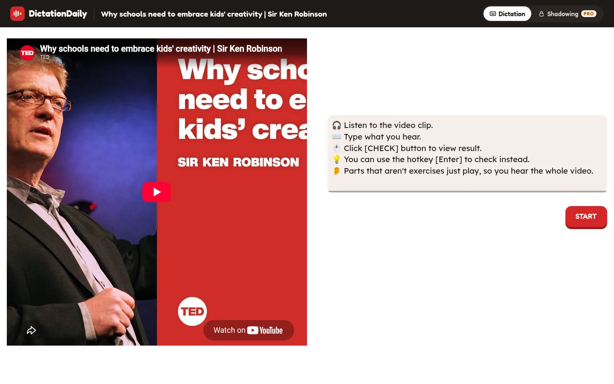
- Top bar: the logo (back to the library) and the video title.
- Left: the YouTube player.
- Right: the dictation area.
- Bottom bar: your position in the lesson and Close.
Press Start or Enter. Pressing play on the video also starts the lesson.
Listen
The clip plays and the video pauses at its end. If you don't answer, it repeats automatically, up to 3 times in total, then waits. Press Replay or Tab to hear it again whenever you like.
The thin bar under the text box fills up as the clip plays, so you can see how much of the sentence is left.
YouTube subtitles are switched off during a lesson, so you can't read the answer off the video. If you seek outside the current clip, the video jumps back to its start.
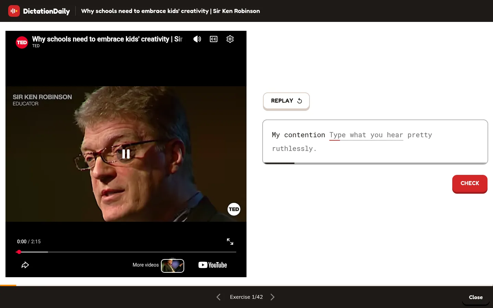
Type what you hear
Type the clip into the box. You don't need to worry about:
- Capital letters:
my contentionmatchesMy contention. - Punctuation: commas, full stops, question marks, quotes, and apostrophes or hyphens inside words (
dontmatchesdon't). - Symbols on their own, such as
--.
Spelling must match the transcript, including how numbers are written: if it says 30s, then thirties is a different word.
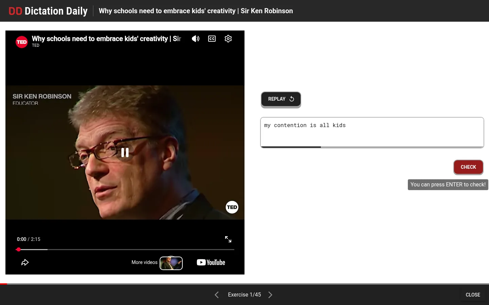
Parts you just listen to
Some parts of a video aren't exercises: music, very short lines, another language, people talking over each other, or speech too fast or unclear to type.
They show Just listen and the transcript if there is one. They play once, then the next exercise starts by itself. Press Enter (or tap Enter to skip) to go to the next exercise straight away. Replay (Tab) plays the part again. The bottom bar says Listening instead of an exercise number.
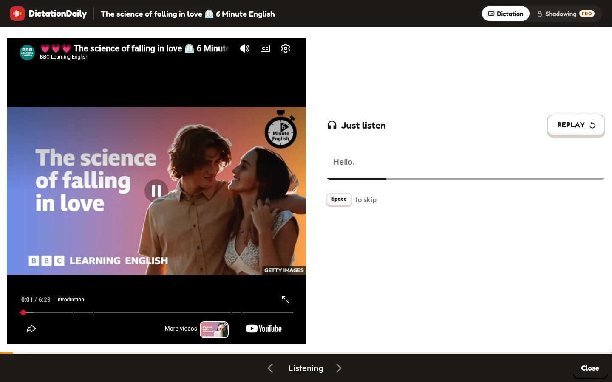
Check, and read the hint
Press Enter or Check. If something is wrong, the app finds the first word that doesn't match:
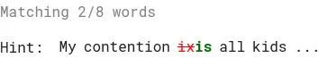
- Matching 2/8 words: how many words in a row you got right from the start, out of the words in the clip.
- A red crossed-out word is one you typed that is wrong or extra.
- A bold green word is what should be there.
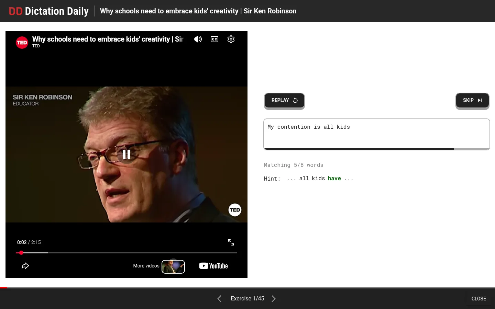
The words before the mistake are also rewritten in the transcript's spelling. Fix the word and press Enter again. Only the first mistake is shown each time, so a clip with three mistakes takes at least three checks.
Stuck? Replay (Tab) to listen again, or Skip (Esc) to move on without answering. Skipped clips don't count as done.
You are correct!
You'll see the full transcript of the clip. As the video plays, each word is highlighted as it's spoken, which helps you hear how words run together.
- Continue or Enter: next clip.
- Undo: clear this clip and do it again.
- Replay or Tab: hear it again while following the words.
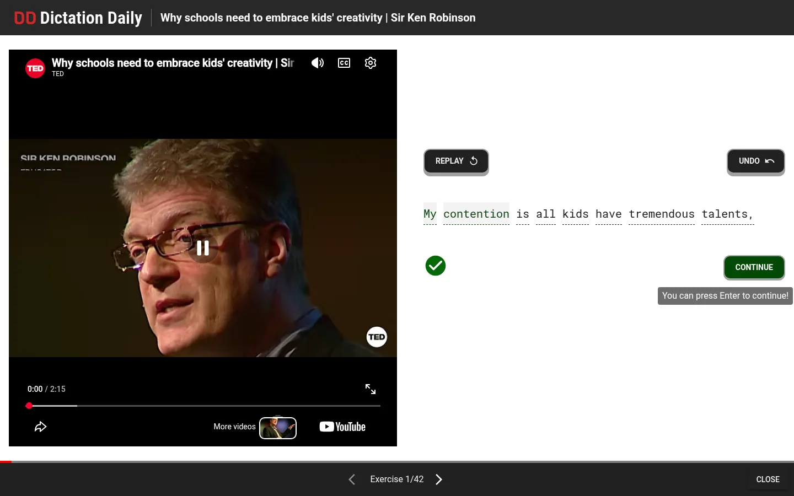
Moving between clips
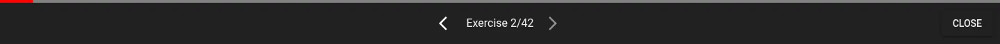
| Control | What it does |
|---|---|
| ◀ | Back to the previous clip or listen part. Clips you've answered show their transcript; press Undo to try one again. |
| ▶ | Forward. Only available once the current clip is answered correctly, or the listen part has played. |
| Close | Leave the lesson and go back to where you came from. |
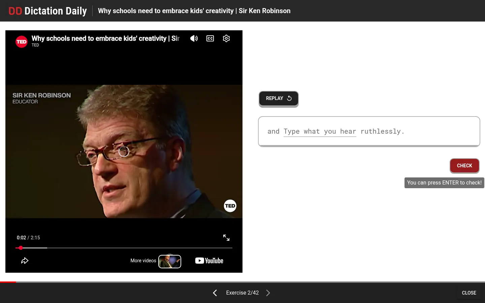
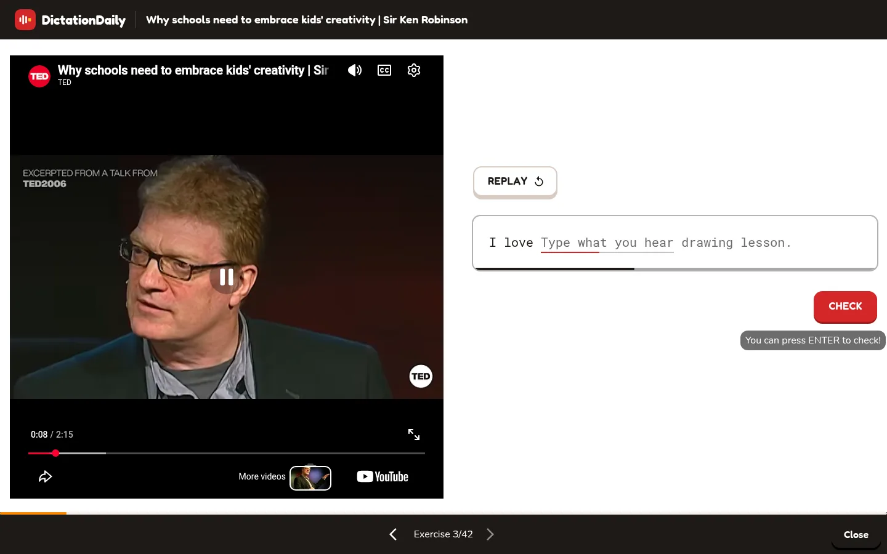
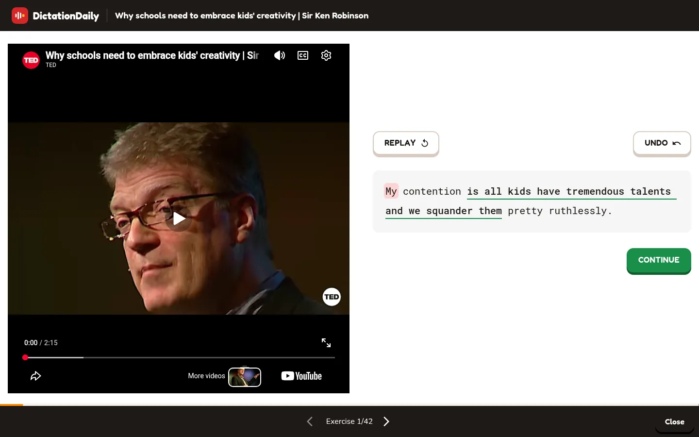
Keyboard shortcuts
The fastest way to practise. Keep your hands on the keyboard.
| Key | While typing | After a correct answer |
|---|---|---|
| Enter | Check your answer | Continue to the next clip |
| Tab | Replay the clip | Replay the clip |
| Esc | Skip to the next clip | Go to the next clip |
Before the lesson starts, Enter presses Start. On a listen part, Enter skips to the next exercise and Tab replays it. If Tab doesn't replay, click inside the text box first.
Finishing a lesson
After the last clip, the rest of the video plays as a listen part, then you'll see a congratulations screen. Back to browse returns to the library; Redo the lesson starts again from clip 1.
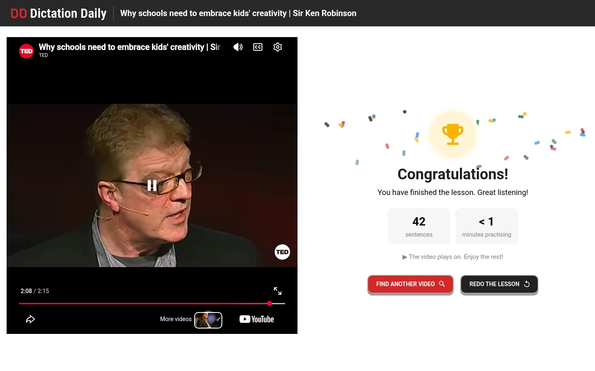
Videos without exercises
A few videos don't have a transcript yet. They open and play, but instead of the dictation area you'll see “Dictation exercises for this video are not available yet”. Pick another video.
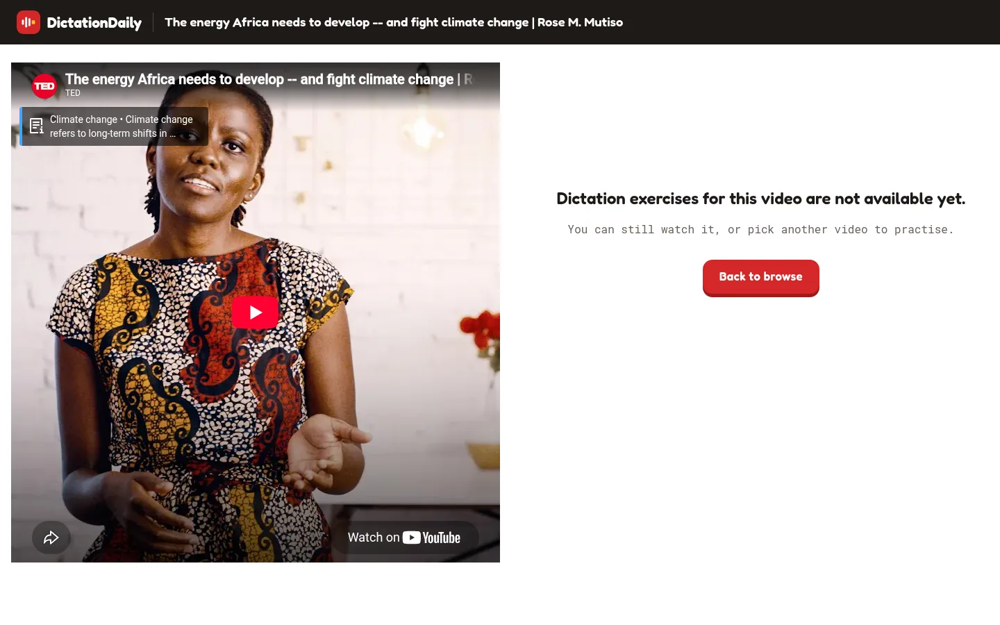
Picking up where you left off
When you're signed in, every correct answer saves your position. Next time you open the video, the lesson starts right after the last clip you got right.
Here the learner had already done 96 clips, so Start goes straight to clip 97.
Signed out, every lesson starts from clip 1.
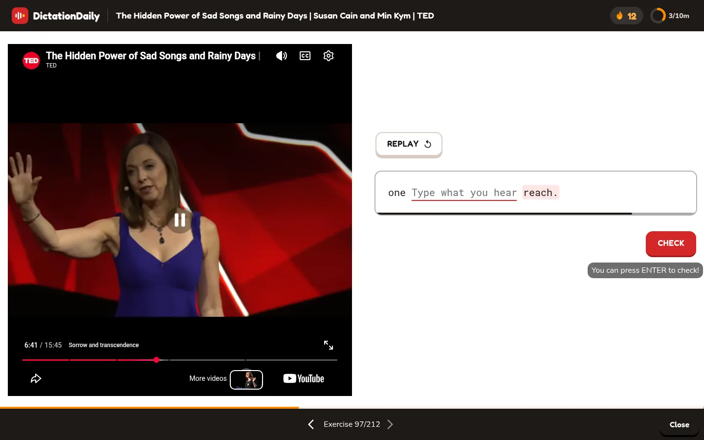
Part 4
Progress, learning time and streaks
Progress tracking needs you to be signed in. It's saved to your account, so it's the same on every device.
What gets saved, and when
Something is saved each time you answer a clip correctly. Skipping, replaying or just watching saves nothing.
| Saved | Used for |
|---|---|
| Your position in that video | Resuming the lesson, the red bar on thumbnails, My Learning |
| The date and the time you spent on the clip | Learning time, active days, streaks |
The top bar when signed in
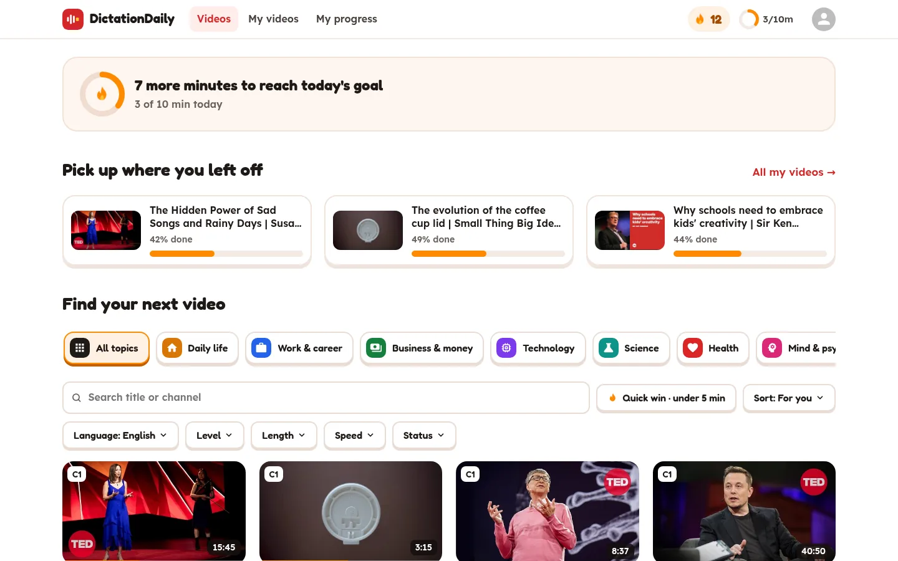
- 🔥 Flame badge
Your current streak in days. - My Learning
A quick menu of your recent videos. - Your avatar
The account menu (sign out).
The My Learning menu
Click My Learning to see the 4 videos you practised most recently, each with a red progress bar. Click one to continue it, or Go to My Learning for the full page.
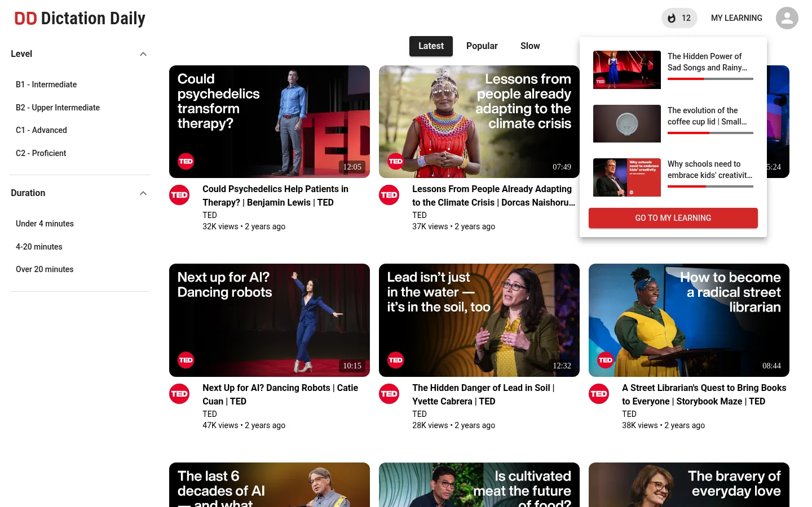
The My Learning page
Open it from the menu, or go to dictationdaily.com/my-learning.
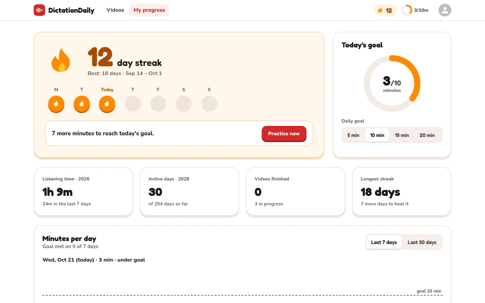
1h 9m
Total Learning Time
Time spent on clips you answered correctly this year.
30
active days
Days this year with at least one correct clip.
12
Current Streak
Days in a row up to today, with the span below it (most recent first).
18
Longest Streak
Your best run this year, with its first and last day.
The statistics restart on 1 January. Below them are your videos, most recently practised first; click one to continue. The page shows 24 at a time, with Load more for the rest.
⏱ How learning time is counted
For each clip you answer correctly, the app counts from when the clip came up to the last key you pressed before the correct check.
- Listening and typing count.
- Time after your last keystroke doesn't.
- Skipped clips don't count.
So it measures active practice, not time with the page open.
🔥 How streaks work
- One correct clip is enough to count a day.
- Your streak isn't lost at midnight: it keeps yesterday's number until the end of today, and goes up when you practise today.
- Days are counted in UTC, not your local time. In Vietnam (UTC+7) a new day starts at 07:00; in New York (UTC−5) at 19:00 the evening before.
Signed out?
My Learning shows zeros and an empty list. Sign in with Sign in to start tracking. Practice done before signing in isn't saved.
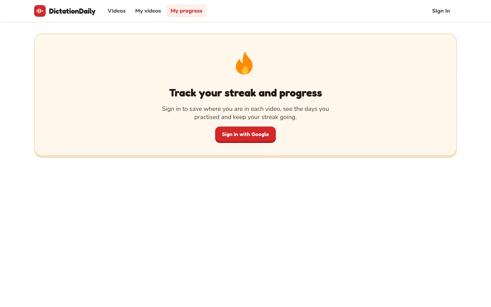
Part 5
Your account
Dictation Daily uses Sign in with Google. There's no separate password.
Signing in
- 1Click Sign in in the top right of any page.
- 2Choose your Google account (or enter your Google email and password).
- 3Allow Dictation Daily to see your name, email address and profile picture.
- 4You're back on Dictation Daily with your picture in the top-right corner.
You stay signed in on that browser for up to 30 days.
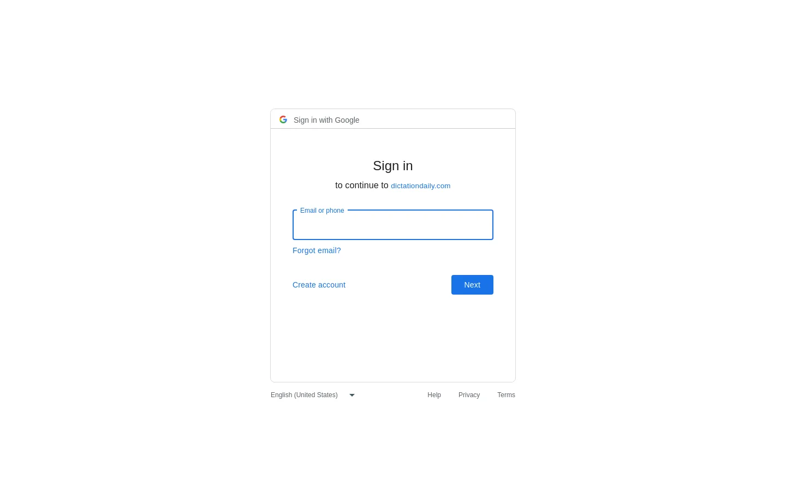
Signing out
Click your avatar. The menu shows your name and email. Click Sign out. Signing out on one browser doesn't sign you out on others.
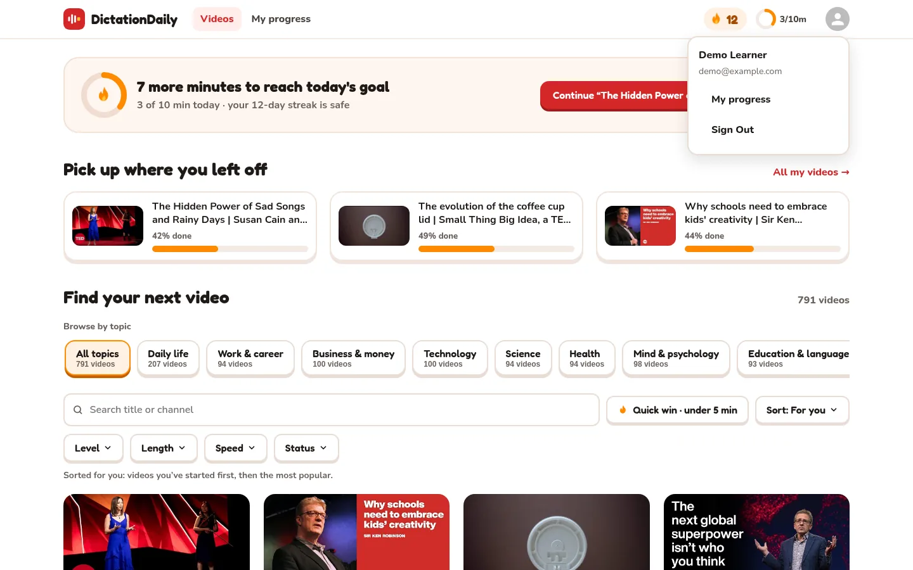
What is stored about you
| Data | Why |
|---|---|
| Name, email address and profile picture URL (from Google) | To show who is signed in |
| For each video you've practised: your position and when you last practised it | Resuming lessons, My Learning |
| For each clip you answered correctly: the date and the seconds you spent on it | Learning time and streaks |
| Your longest streak | Shown on My Learning |
Dictation Daily never sees your Google password and can't access your Gmail, Drive or other Google data. The text you type in lessons is checked in your browser and is not sent or stored. Progress is linked to your email address, so another Google account gets a separate, empty history.
Part 6
Phones and tablets
Everything works on a touch screen. The video sits above the dictation area and the bottom bar stays at the bottom. The text box isn't selected automatically, so your keyboard doesn't keep popping up: tap the box to type, and use the Check, Replay and Skip buttons instead of shortcuts.
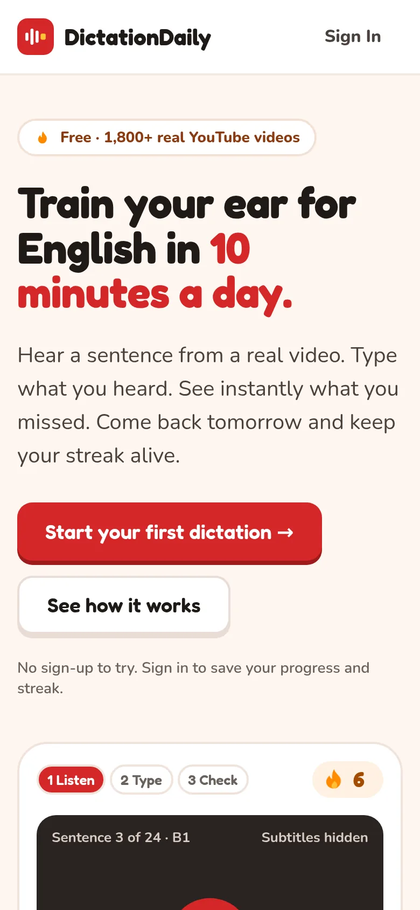
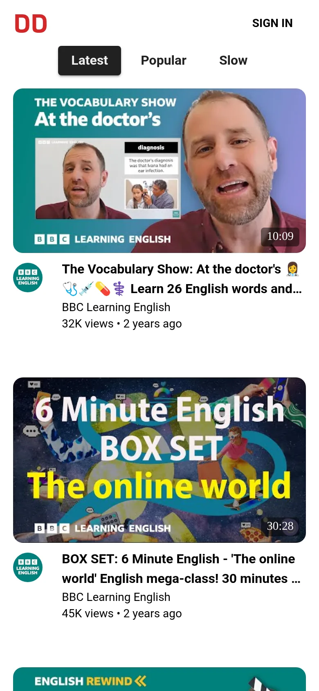
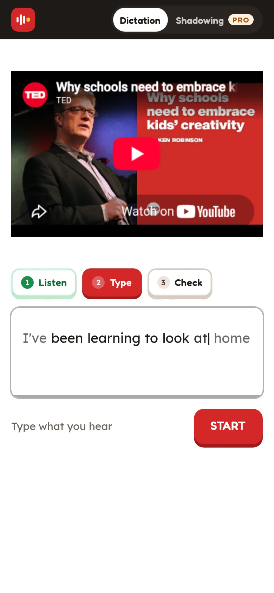
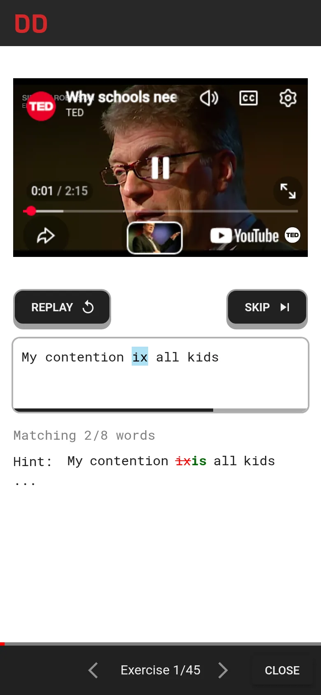
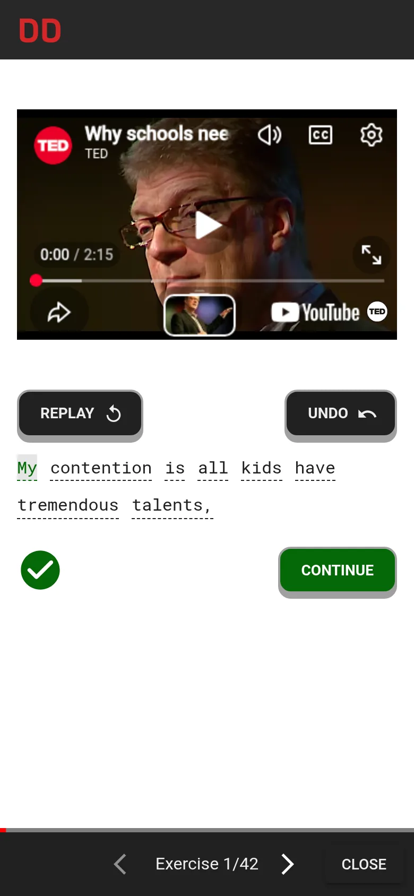
On a phone the filter panel is hidden; sorting still works. To filter by level or duration, use an address from the table above, such as /videos?level=B1.
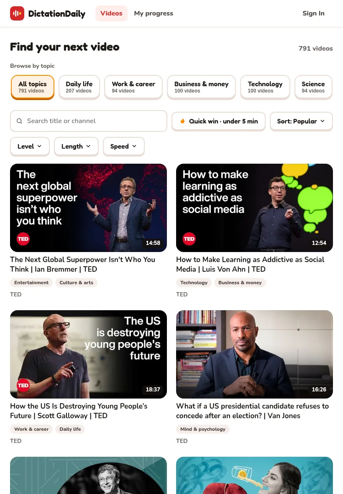
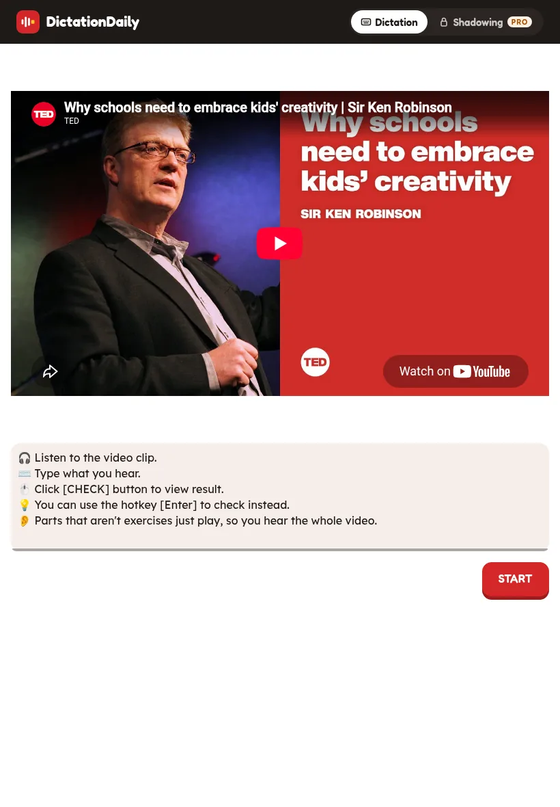
Part 7
FAQ and troubleshooting
My answer is right but it says it's wrong. +
Look at the hint: the green word is what the transcript expects. Common causes:
- numbers written differently (
30svsthirties,10vsten) - British vs American spelling (
colour/color) - filler words the speaker really says (
um,so,like) - two words typed as one, or one as two (
every dayvseveryday)
Capital letters and punctuation never matter.
The transcript itself has a mistake. +
Transcripts are generated automatically from the audio, so they're occasionally wrong. Type what the hint says, or press Skip (Esc).
The clip stopped repeating. +
Each clip plays up to 3 times, then waits. Press Replay or Tab.
There's no sound, or the video won't play. +
Check that YouTube works in your browser and the tab isn't muted. Some browsers block sound until you've clicked on the page: press Start with the mouse once. If the video says “This video is unavailable”, its owner removed it or blocked embedding; pick another.
The ▶ button at the bottom is greyed out. +
You can only move forward after answering the current clip correctly. Use Skip (Esc) to move on without answering.
My lesson started from clip 1 again. +
Progress is only saved when you're signed in, and only when you answer a clip correctly. Check that your avatar is in the top right. Skipped clips don't move your saved position.
My streak is lower than I expected. +
Streak days are counted in UTC, not your local time (see How streaks work). A day only counts if you answered at least one clip correctly.
My Learning is empty after signing in. +
Progress belongs to the email you signed in with. Sign out and sign in with your usual Google account.
“Something went wrong” or “Couldn't load videos”. +
Press Try again or Retry; if that doesn't help, reload the page. It's usually a short network problem.
“This page could not be found.” (404) +
The address is wrong, or the video was removed from the catalogue. Go to dictationdaily.com/videos.
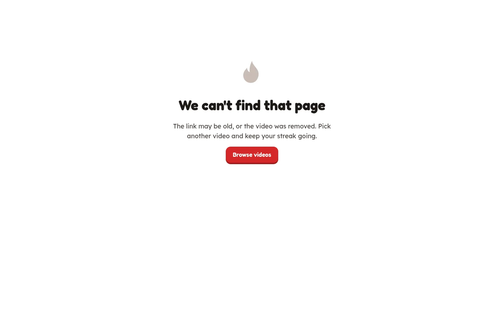
Can I sign in without Google? +
Not at the moment. You can still practise without signing in; your progress just won't be saved. If Google shows an error, try a private/incognito window, and report the exact message if it keeps happening.
Ready for your first clip?
Start with a Slow, short video and practise a little every day. Ten minutes a day beats an hour once a week.
Find an easy video